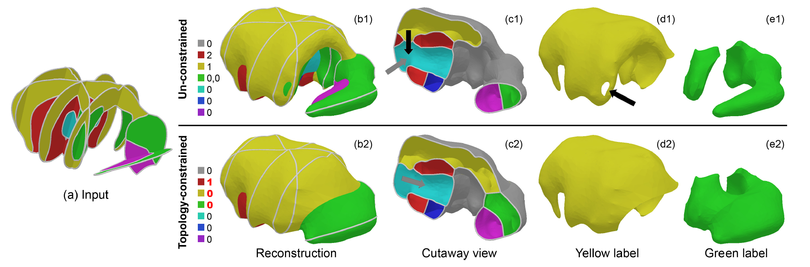

Topology-controlled Reconstruction of Multi-labelled Domains from Cross-sections
Publication:
ACM Transactions on Graphics (Proc. ACM Siggraph 2017)
Authors:
Zhiyang Huang*, Ming Zou*, Nathan Carr^, Tao Ju*
Affiliations:
*Washington University in St. Louis, ^Adobe
 Teaser:
Given several multi-labeled planes depicting the anatomical regions of
a mouse brain (a), reconstruction without topology control (b1) leads
to redundant handles for the red and yellow labels (black arrows in c1,
d1) and disconnection for the green label (e1). Our method (b2) allows
the user to prescribe the topology such that the red label has one
tunnel (gray arrow in c2), the yellow label has no tunnels (d2), and
the green label is connected (e2). The legends in (b1,b2) report, for
each label in the reconstruction, the genus of each surface component
bounding that label (e.g., “0,0” means two surfaces each with genus 0).
User-specified constraints are colored red.
Abstract
In
this work we present the first algorithm for reconstructing
multi-labeled material interfaces the allows for explicit topology
control. Our algorithm takes in a set of 2D cross-sectional slices (not
necessarily parallel), each partitioned by a curve network into labeled
regions representing different material types. For each label, the user
has the option to constrain the number of connected components and
genus. Our algorithm is able to not only produce a material interface
that interpolates the curve networks but also simultaneously satisfy
the topological requirements. Our key innovation is defining a space of
topology-varying material interfaces, which extends the family of level
sets in a scalar function, and developing discrete methods for sampling
distinct topologies in this space. Besides specifying topological
constraints, the user can steer the algorithm interactively, such as by
scribbling. We demonstrate, on synthetic and biological shapes, how our
algorithm opens up new opportunities for topology-aware modeling in the
multi-labeled context.